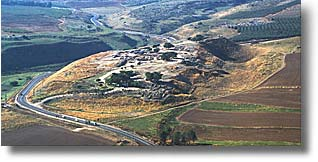
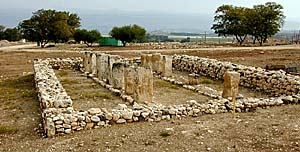
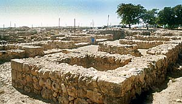
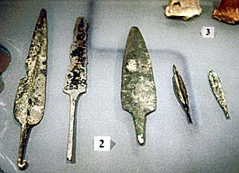
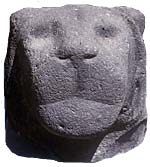

Meaning: enclosed; fortified
 |
Hazor was the name of four biblical places…
"A stronghold of the Canaanites in the mountains north of Lake Merom (Josh. 11:1-5). Jabin the king with his allied tribes here encountered Joshua in a great battle. Joshua gained a signal victory, which virtually completed his conquest of Canaan (11:10-13).
| 
|
This city was, however, afterwards rebuilt by the Canaanites, and was ruled by a king with the same hereditary name of Jabin. His army, under a noted leader of the name of Sisera, swept down upon the south, aiming at the complete subjugation of the country.
This powerful army was met by the Israelites under Barak, who went forth by the advice of the prophetess Deborah. The result was one of the most remarkable victories for Israel recorded in the Old Testament (Josh. 19:36; Judg. 4:2; 1 Sam. 12:9). The city of Hazor was taken and occupied by the Israelites.
It was fortified by Solomon to defend the entrance into the kingdom from Syria and Assyria. When Tiglath-pileser, the Assyrian king, invaded the land, this was one of the first cities he captured, carrying its inhabitants captive into Assyria (2 Kings 15:29) " (Matthew G. Easton).
ChristianAnswers.Net's archaeology Team Member, Associates for Biblical Research, has been doing extensive research at Hazor:
Why Dig Hazor?
Hazor is an important and impressive site. In fact, Hazor is the largest archaeological site in Israel. This 200-acre city consists of two parts, the Upper City, or Acropolis, and the Lower City. The next largest cities, apart from Jerusalem, are Gezer and Lachish at 18 acres. Hazor is eleven times the size of these cities!
"For the student of the Bible, Hazor has an impressive amount of Biblical history and the archaeological remains to go along with it.
The first mention of Hazor in the Bible is in Joshua 11.
"Joshua turned back at that time and took Hazor, and struck its king with the sword; for Hazor was formerly the head of all those kingdoms. And they struck all the people who were in it with the edge of the sword, utterly destroying them. There was none left breathing. Then he burned Hazor with fire. But as for the cities that stood on their mounds, Israel burned none of them, except Hazor only, which Joshua burned" (11:10,11,13; cf. 12:19).
The first Israeli excavator of Hazor, Yigel Yadin, and the present excavator, Amnon Ben-Tor, believe the burn level of the Late Bronze II period is evidence of Joshuas destruction.
Hazor was allotted to the tribe of Naphtali (Josh. 19:36) and is mentioned in the account of Judges 4 and 5, the story of Deborah and Barak (Judges 4:2-3, 24).
 |
|
Yadin excavated a very impressive six-chambered gate dating to the 10th century BC and built by King Solomon. Similar gates from this period were discovered at Megiddo and Gezer. Yadin connected this phenomenon with a passage in the Scriptures,
"And this is the reason for the labor force which King Solomon raised to build: to build the house of the LORD, his own house, the Millo, the wall of Jerusalem, Hazor, Megiddo, and Gezer" (1 Kings 9:15).
In the mid-8th century BC an extraordinary earthquake hit the Middle East. Amos (1:2) as well as Isaiah (2:19, 21) predicted this earthquake. Yadin discovered evidence for this earthquake in the 1950s in Area A. …Walls were uncovered that tilted to the south or east and collapsed floors were found. …The prophets warned the people to humble themselves because they were proud and haughty. If they did not, the prophets said, God would humble them with an earthquake (Isa. 2). …Based on the archaeological evidence, it was determined that the magnitude of this quake measured at 8.2 on the Richter scale! That was a big quake.
|
|
Israel, the Northern Kingdom, did not heed the words of the prophets. Amos predicted that a greater judgment would fall on Israel if they did not return to the Lord. That judgment was an invasion by the Assyrians. In 732 BC, the Assyrian king, Tiglath-Pileser III invaded Israel.
"In the days of Pekah king of Israel, Tiglath-Pileser king of Assyria came and took Ijon, Abel Beth Maachah, Janoah, Kedesh, Hazor, Gilead, and Galilee, all the land of Naphtali; and he carried them captive to Assyria" (2 Kings 15:29; cf. Isa, 9:1).
|  |
At one point during the excavation I was clearing a street level, the area supervisor called it a junkyard. Among other things, I found five arrowheads, one spear point and a sickle, all possibly associated with the Assyrian attack on the city in 732 BC. As I was digging, I was wondering to myself, why would God allow the Assyrians to attack Israel?
I recalled the words of the prophet Isaiah,
"Woe to Assyria, the rod of My anger and the staff in whose hand is my indignation. I will send him against and ungodly nation, and against the people of My wrath" (10:5, 6a).
|  |
God used the Assyrians to chasten Israel in order to bring them back to Himself. They did not respond positively to the message of the prophets so they were taken into captivity (Lev. 26:32-39; Deut. 28:58-67).
Interestingly enough, Yadin discovered partially eaten pigs underneath the Assyrian destruction level. This indicates that the Israelites were eating pork just prior to the destruction of the city, something the prophet Isaiah condemned because the Mosaic Law forbade it (Isa. 65:1-4; 66:17, cf. Lev. 11:7)."
Author of above text: Gordon Franz, Associates for Biblical Research
Author: Matthew G. Easton.
ALSO SEE:
{kind=link}
{kind=link}
{kind=link}
{kind=link}
{kind=link}
{kind=link}
{kind=link}
{kind=link}